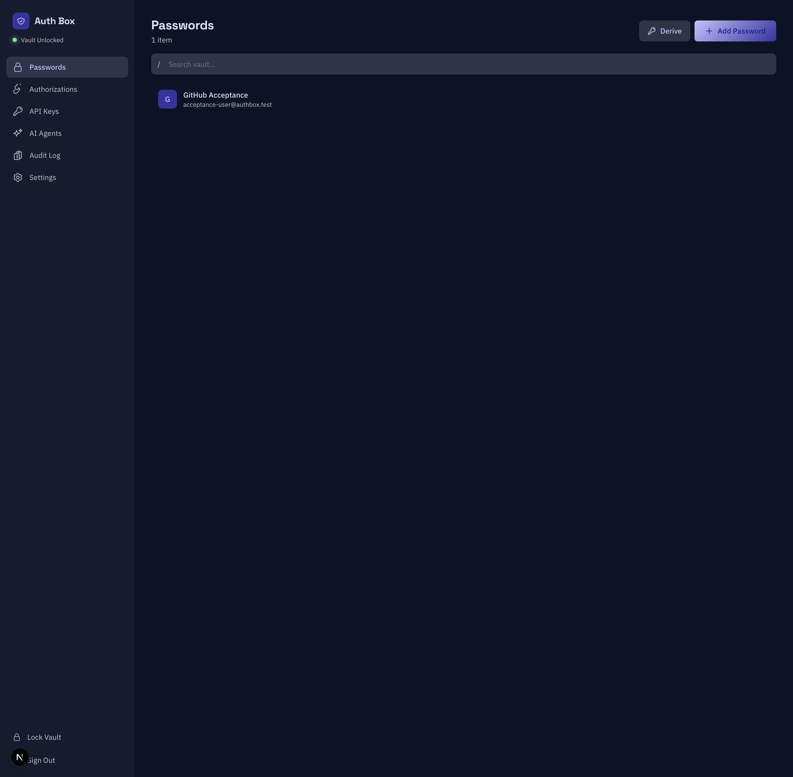
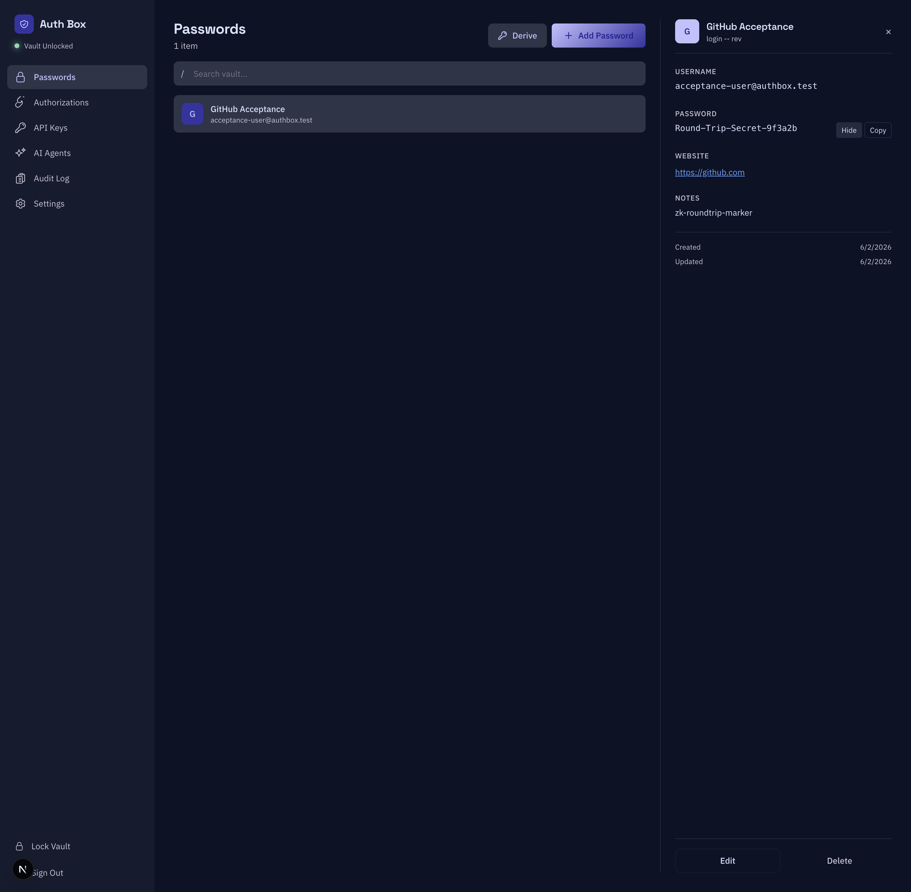
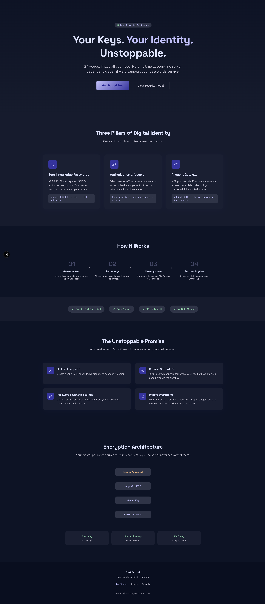
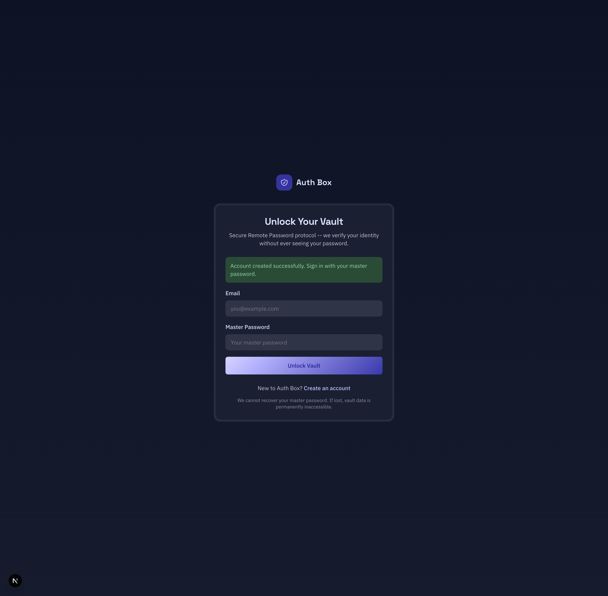
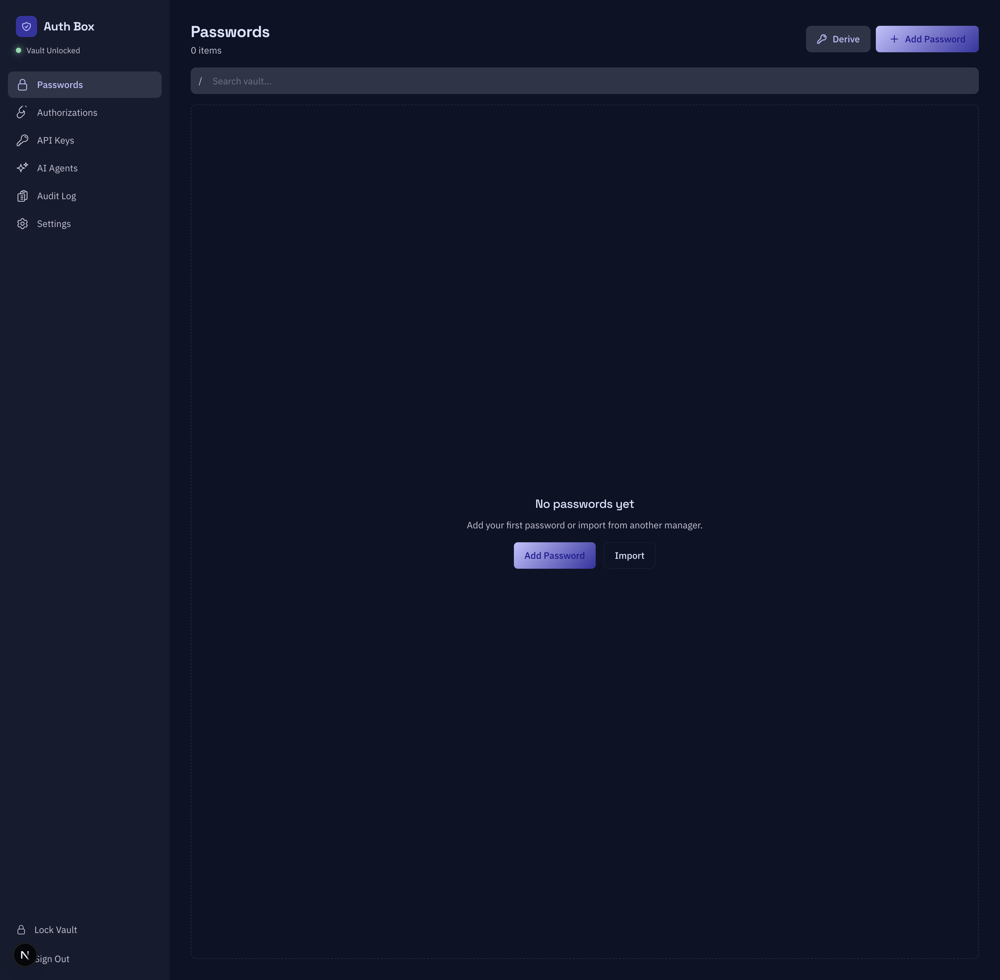
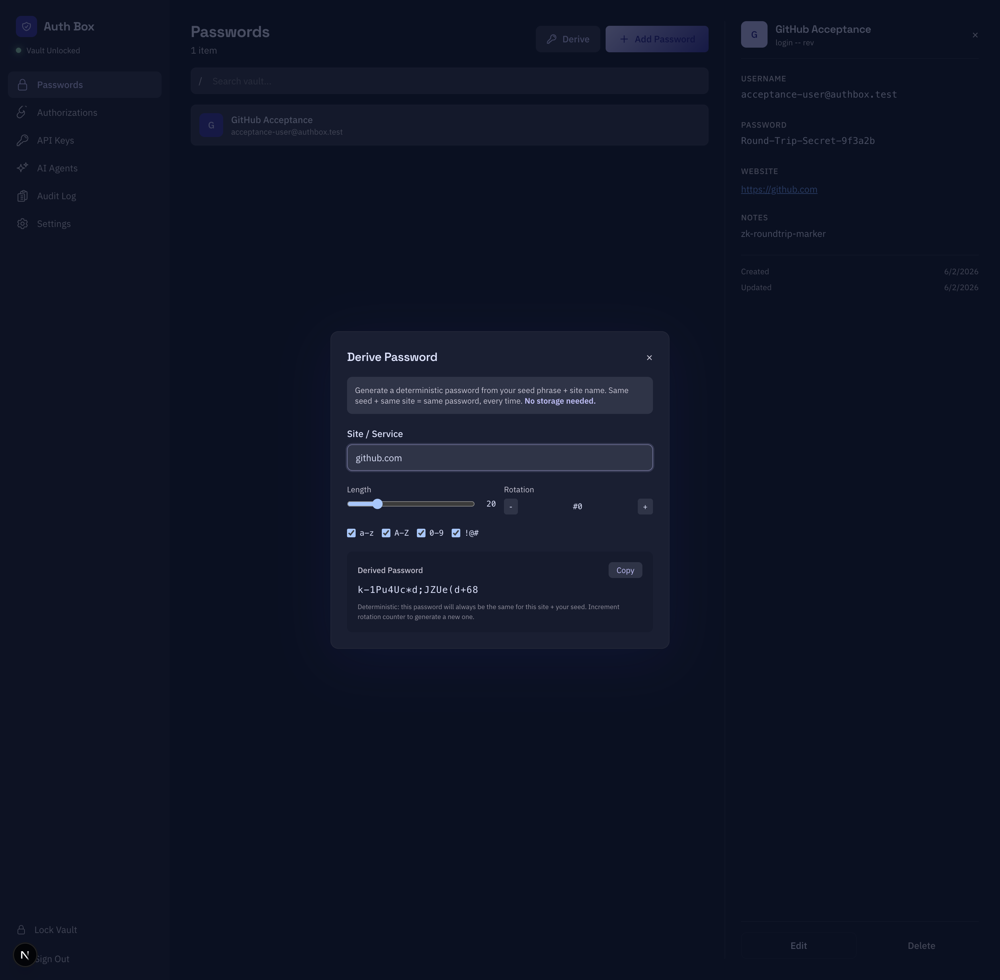
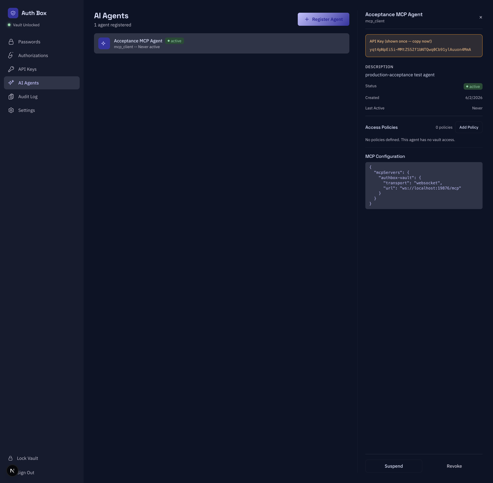
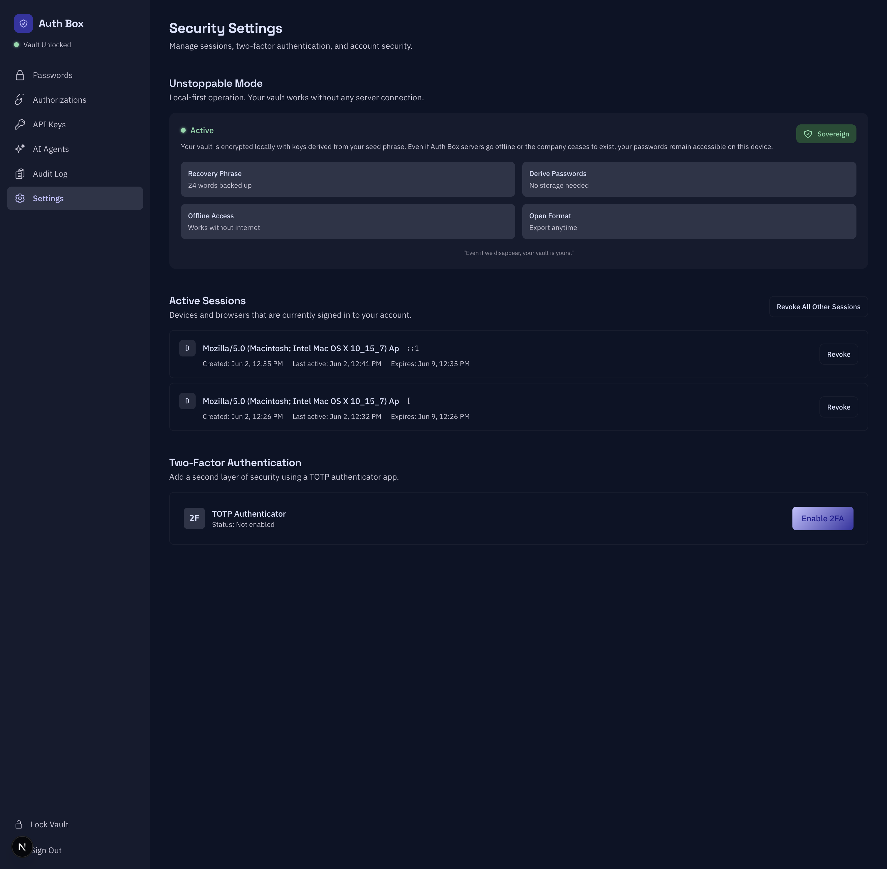
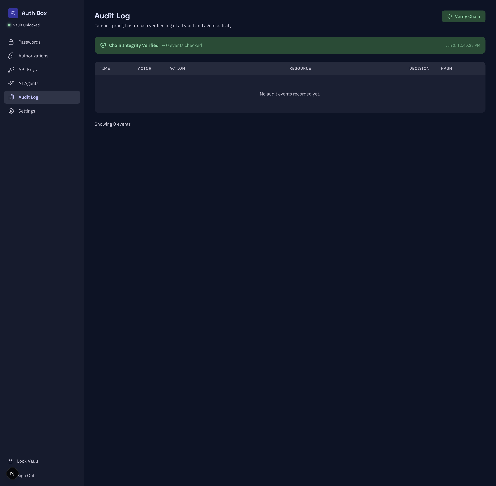
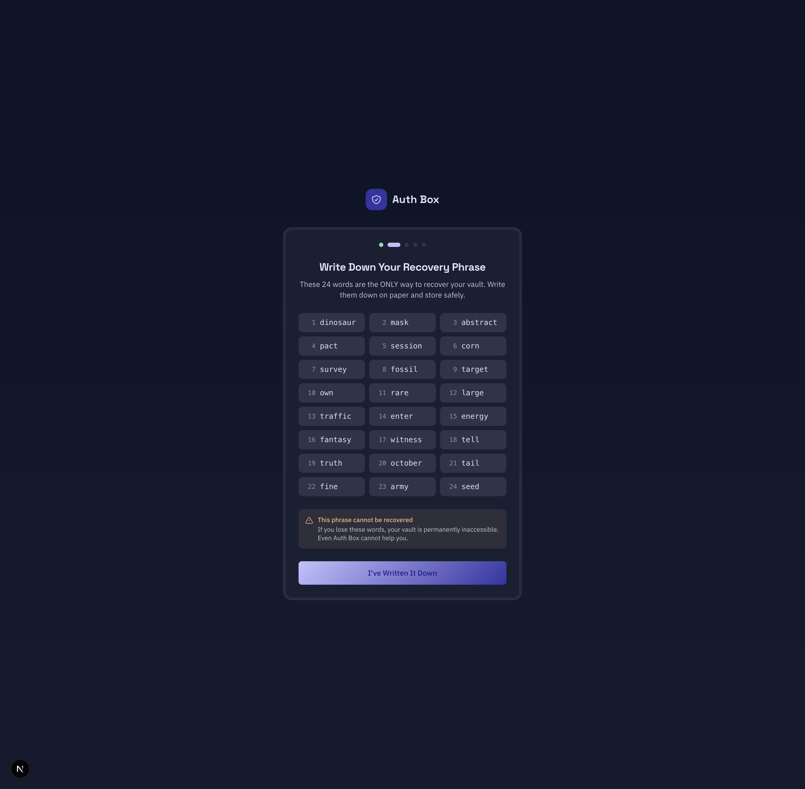

01核心结论
Conclusion-first：先给结论，再展开证据。
- 零知识闭环是真的，不是营销话术。浏览器中输入的密码在客户端经 AES-256-GCM（高级加密标准-伽罗瓦计数器模式）加密，以不透明密文 POST（提交）到服务端，落库为 191 字节、无任何明文泄漏（直接 grep 真实数据库行验证）。经过「锁定 → 重新解锁」后，密文在浏览器解回逐字节一致的明文
Round-Trip-Secret-9f3a2b。服务器从不见明文，客户端完美往返。 - 发现并修复 2 个发布级客户端↔服务端契约缺陷。每次保存密码都返回 HTTP 500（
itemType枚举不一致：客户端发login，服务端只认credential）；每次注册 MCP-client / ChatGPT 类型 AI 代理都返回 HTTP 400（agentType枚举不一致）。两者均已对齐到共享规范枚举，修复后闭环通过（201 Created）。 - 开发栈本身在 3 个维度是坏的（
make up残留 redis 引用；本地 API 绑:8080而 Web 硬编码:4010；迁移在 v9 处于 dirty 状态）。全部修复，make dev/make dev-api现在可产出可用栈。 - 13 条 headless（无人值守可测）旅程中 11 条深度验证 PASS。剩余 2 条（TOTP 登录二次验证、TOTP 启用）是真正的 HITL（人工介入）门——需要真实验证器应用的一次性验证码，无法无人值守测试。
- 整个会话零控制台错误/警告（注册 → 登录 → 增删改查 → 锁定/解锁 → 派生 → 代理 → 审计 → 全部 6 个保险库分区）。
- 2 项完整性缺口（非回归）：哈希链审计机制可用且能校验，但没有任何服务为用户行为写入审计事件，导致「全程审计」这一卖点在常规使用下处于空转；会话令牌仅存于内存（一个刻意的安全/体验权衡——硬刷新会登出用户）。
02环境搭建：测试前必须先修的 3 个基建缺陷
在跑任何旅程之前，开发栈起不来——这本身就是 3 个真实缺陷。
| 编号 | 缺陷 | 根因 | 修复 |
|---|---|---|---|
ENV-1 | make up 报 no such service: redis | compose 已注释掉 redis 服务（标注 Phase 4），但 up 目标仍执行 up -d postgres redis | Makefile up：从 compose 调用中移除 redis（仅 postgres） |
ENV-2 | Web（:3010）调用 :4010，但本地 API 绑 :8080 | apps/web/lib/api.ts 硬编码 LOCAL_API_BASE=:4010；4010:8080 映射只在 docker；make dev-api 跑 go run 未设 AUTH_BOX_HTTP_ADDR → 默认 :8080 | Makefile dev-api：导出 AUTH_BOX_HTTP_ADDR=":4010" |
ENV-3 | make migrate 报 Dirty database version 9 | 前次迁移被中断，golang-migrate 留下 dirty=true；009 的两个索引缺失 | 将 bookkeeping 表强制为 version=8, dirty=false 后重跑迁移（009 是幂等 CREATE INDEX IF NOT EXISTS），干净到达 v10 |
Postgres 以既有容器 authbox-postgres 运行于宿主端口 5410。vault_items.item_type 是自由 VARCHAR(50)、无 CHECK 约束，故服务端 validItemTypes map 是唯一关卡——修 map 即可，无需迁移。
03发现并修复的缺陷
两个同类的「客户端↔服务端枚举契约漂移」缺陷，都在真实点击中暴露。
CRITICAL AUD-CONTRACT-01 — 每次保存密码都 HTTP 500
现象：新建任意密码项 → 红字「failed to create item」；POST /api/v1/vault/items → 500。API 日志：create item failed error="invalid itemType"。请求体是规范的零知识密文（encryptedData/nonce/tag，无明文），itemType:"login"。
根因：枚举漂移。规范 packages/shared/.../vault.ts 的 ItemType = {login, api_key, secure_note, identity, card}；客户端正确发 login；服务端 validItemTypes 却漂移成 {credential, note, card, identity, api_key}——拒绝 login 与 secure_note，且空值默认是非规范的 credential。
修复：服务端 map 对齐规范 + 空值默认改 login + 新增导出 IsValidItemType；handler 在调用 service 前校验 itemType 并返回 400（此前所有 service 错误一律 500——把客户端输入错误误报成了内部错误）。验证：修复后 POST /vault/items → 201 Created。
HIGH · FIXED AUD-CONTRACT-02 — MCP-client / ChatGPT 代理注册 HTTP 400
现象：注册类型为「MCP Client」（UI 默认值 + 旗舰用例）的代理 → 红字「invalid agentType」；POST /api/v1/agents → 400。
根因：三方枚举漂移。客户端 {mcp_client(默认), claude, chatgpt, gemini, custom}；规范枚举 + Zod {claude, chatgpt, gemini, custom}；服务端 {claude, gpt, gemini, custom}。于是 mcp_client 无人接受，且服务端用 gpt 而别处都用 chatgpt——选 ChatGPT 也会失败。
修复（把四层统一到一个词表 {mcp_client, claude, chatgpt, gemini, custom}）：服务端 map 加 mcp_client、改 gpt→chatgpt；service 空值默认 service→custom；规范 AgentType 枚举 + Zod 加 mcp_client（把旗舰类型提升为一等公民——从 UI 删除该选项会抹掉产品旗舰用例，故选择「提升」而非「删除」）。验证：修复后 POST /agents → 201，代理 active、类型 mcp_client、API 密钥一次性展示、默认拒绝（无策略=无访问）。
设计旁注：代理端点本就正确返回 400，而 vault-items 端点返回 500。vault_handler 的修复使其与 agent_handler 既有约定一致。
04逐旅程验收结果
每条旅程的「闭环证明」是一次加密往返或服务器状态校验，不是渲染检查。
| 旅程 | 结论 | 闭环证明 |
|---|---|---|
| J0 营销落地页 | PASS | Hero / 三大支柱 / How-It-Works / 4 个信任徽章 / 页脚均渲染；Get Started→/create，Sign In→/login |
| J1 SRP 注册仪式 | PASS | POST /auth/register 201；跳转 /login?registered=true + 成功横幅 = 账户在服务端落地（SRP verifier + 加密保险库密钥被接受） |
| J2 SRP 登录 → 解锁 | PASS | login/init 200 → login/verify 200（服务器证明 M2 双向认证通过）→ vault/sync 200；到达 /passwords「Vault Unlocked」= 保险库密钥在浏览器解密 |
| J3 密码增删改查往返 | PASS（修 01 后） | POST /vault/items 201；服务端仅存 191 字节不透明密文，零明文泄漏（DB grep）；客户端显示解密明文 |
| J4 助记词建库（BIP39） | PASS | 「Generate Recovery Phrase」生成恰好 24 个互异 BIP39 词 + 备份警告 |
| J6 确定性密码派生 | PASS | github.com→k-1Pu4Uc*d;JZUe(d+68；stripe.com→不同；github.com 再次→一致 = 确定性 |
| J7 注册 AI 代理 + 一次性密钥 | PASS（修 02 后） | POST /agents 201；密钥一次性展示；默认拒绝（0 策略=无访问）；MCP WebSocket 配置渲染 |
| J8 授权（OAuth/API 连接） | PASS（渲染） | 空状态 +「客户端加密所有令牌」文案；渲染干净 |
| J9 API 密钥（.env 导入） | PASS（渲染） | 空状态 +「70+ 提供商」；api_key 类型现在通过与 login 相同的已修复校验 |
| J10 审计日志 + 哈希链校验 | PASS（机制） GAP | GET /audit/verify 200 →「Chain Integrity Verified」。但 0 事件——见 GAP-1 |
| J11 设置：会话 + Unstoppable Mode | PASS | GET /auth/sessions 列出我 2 次真实登录会话 + 准确时间戳 + Revoke；Unstoppable Mode 面板；2FA「未启用」 |
| J12 锁定 → 重新解锁往返 | PASS | 锁定（密钥擦除）+ 重新解锁后：vault/key + vault/sync（仅密文）→ 解密逐字节一致 |
| J13 2FA 登录（TOTP 二次验证） | HITL | 需真实验证器一次性码——无法无人值守 |
| J14 启用 TOTP 2FA（扫码/验证） | HITL | 需真实验证器一次性码——无法无人值守 |
Headless 覆盖：11/13 PASS，2/13 HITL。Web 端无任何 Touch ID/生物识别（生物识别属 macOS 原生界面，不在本次范围）。
05零知识闭环（核心证明）
- 浏览器：输入密码
Round-Trip-Secret-9f3a2b、名称GitHub Acceptance、备注zk-roundtrip-marker。 - 客户端在浏览器内 AES-256-GCM 加密；
POST /vault/items只携带{itemType, encryptedData, nonce, tag}——链路上无明文。 - 服务端落库行
c04f5f34-…：item_type='login'、191 字节不透明密文 + nonce + tag。对存储字节 grepGitHub/Round-Trip-Secret/acceptance-user/ 标记 → 零命中。 - 锁定保险库（内存密钥擦除），再用主密码重新解锁：
GET /vault/key返回加密保险库密钥，GET /vault/sync只返回密文 blob。 - 浏览器内解密 → 揭示密码
Round-Trip-Secret-9f3a2b，与原始逐字节一致。
这种不对称——服务器持有不透明 blob，客户端把它往返成精确明文——就是零知识架构在运转的证据，而且是通过检查真实存储字节证明的，不是相信一个渲染出来的表单。


06缺口与观察（非回归，已记录、未修）
HIGH GAP-1 — 审计日志未接入任何变更路径
营销宣称「篡改可证、哈希链校验的全部保险库与代理活动日志」。哈希链基建扎实且有单测（audit_repo_chain_test.go），GET /audit/verify 可用。但只有 AuditService.LogEvent 写事件，其他服务（vault/auth/agent）既不持有审计写入依赖也不调用它。注册、登录、增删改查、代理注册都产生了 0 条审计事件。
影响：「全程审计」卖点在常规用户活动下空转。未在本次修复：把审计接入每条变更路径 + 定义事件分类法是一项实质功能 + 产品设计决策，超出验收范围，建议立专项。check: grep -rl "auditRepo\|LogEvent" services/api/internal/service/ → 仅 audit_service.go
INFO OBS-1 — 会话仅存内存；硬刷新即登出
会话令牌 + 保险库密钥存于客户端内存（无 cookie / sessionStorage）。客户端路由（侧栏链接）保留会话；整页刷新或直接深链导航会回退到 /login。对保险库而言这是可辩护的安全/体验权衡（不持久化令牌 = 更小的 XSS 窃取面），但值得一个明确产品决策 + 可能加一个「刷新后已登出」提示。
INFO · 既有 OBS-2 — packages/shared/src/ 下提交了陈旧编译产物
tsc 输出到 dist/（outDir: ./dist），但 src/ 下也提交了陈旧 .js/.d.ts。重建后 dist/ 已正确；src/*.js 残留是既有卫生问题（与本次无关），且运行时不消费。
07验证状态与变更文件
| go build ./...（services/api） | OK |
|---|---|
| go test service + handler | 8 passed, 0 failed |
| 浏览器控制台（全程，error+warn） | 0 messages |
| CORS 预检（origin :3010） | Allow-Credentials: true + 精确 origin（非 *）——带凭证的零知识 API 的正确配置 |
| 关键网络状态码 | register 201 · login init/verify 200/200 · vault sync 200 · item create 201（修后）· agent create 201（修后）· audit verify 200 |
变更文件
Makefile | up：移除 redis；dev-api：AUTH_BOX_HTTP_ADDR=:4010 |
services/api/.../service/vault_service.go | validItemTypes 对齐规范 + 默认 login + IsValidItemType |
services/api/.../handler/vault_handler.go | 无效 itemType 返回 400（而非 500） |
services/api/.../handler/agent_handler.go | validAgentTypes：+mcp_client，gpt→chatgpt |
services/api/.../service/agent_service.go | 空值默认 service→custom |
packages/shared/src/types/agent.ts | AgentType += MCPClient = 'mcp_client' |
packages/shared/src/validation/index.ts | Zod AgentTypeEnum += 'mcp_client' |
后续行动
| 行动 | 负责 | 优先级 |
|---|---|---|
| 把 LogEvent 接入 vault/auth/agent 变更路径 + 定义事件分类法（GAP-1） | backend | High |
| 定义会话持久化预期行为；加「刷新已登出」提示或持久化硬化令牌（OBS-1） | product + frontend | Medium |
| 加契约测试：断言客户端 ItemType/AgentType 枚举 == 服务端有效集合（防止 01/02 回归） | backend + shared | High |
清理 packages/shared/src/ 下陈旧构建残留（OBS-2） | build | Low |
08验收截图存档
真实像素截图，经 chrome-devtools MCP 在隔离浏览器上下文中采集。







